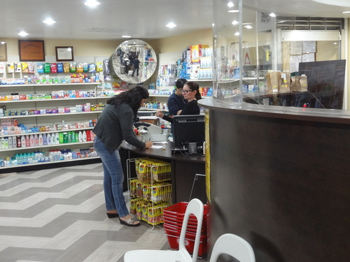

Dr. Andrew Kwong nació en China, se crió en Hong Kong, y vino a los Estados Unidos cuando tenia 18 años y asistió a la Universidad de Oregón. Eventualmente se ganó Doctor en Farmacia en la Universidad del Sur de California en 1978. Seis años despues, compró Gateway Circle Farmacy en la esquina de Figueroa y Avenida 26. Y en enero de 2014, compró la propiedad en la esquina de Broadway y Eastlake Ave y se trasladaron a la farmacia a esta nueva ubicación. Muchas personas del barrio vinieron a saludarle y le dieron las gracias por la apertura de una nueva y hermosa farmacia.

Él cree firmemente que las farmacias comunitarias independientes que construyen relaciones personales con la gene, son una mejor farmacia de barrio que las cadenas de farmacias corporativos.
Como un negociante independiente, cree en la inversión en la comunidad donde opera y apoya la juventud como el futuro de la comunidad. El activamente apoya las organizaciónes como InTheCity que se ejecuta un programa excelente en Lincoln High School para ayudar a los jugadores de fútbol mejorar su promedio de calificaciones a 3.0 en lugar del mínimo de 2.0. Debido a que el programa es tan exitoso, dona 15 centavos de cada receta en su farmacia hacia esta organización. En su propia familia, su hijo está en su tercer año de residencia de Medicina Interna en Nueva York.
Dr. Kwong ha llegado a apreciar la cultura latina durante los últimos 30 años haciendo negocios en esta comunidad y es orgulloso de ser al servicio a una comunidad que valora empresas de propiedad local.